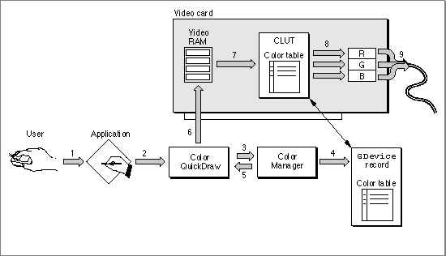
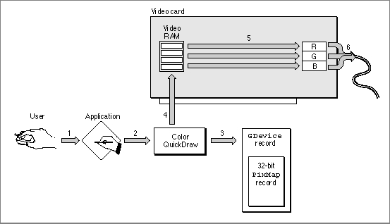

From Memory Bits to Onscreen Pixels
Tracing the path from data in memory to a pixel on one of several connected screens traverses the major elements of QuickDraw and recapitulates much of the discussion in this chapter.In Figure 1-18, the user of an indexed color system selects a color for some object from an application (1). Using a 48-bit
RGBColorrecord to specify the color, the application calls a Color QuickDraw routine to draw the object in that color (2). Color QuickDraw uses the Color Manager to determine what color in the video device's CLUT comes closest to the requested color (3).Figure 1-18 The indexed-pixel path

At startup, the video device's declaration ROM supplies information for the creation of theGDevicerecord that describes the characteristics of the device. The resultingGDevicerecord contains aColorTablerecord that is kept synchronized with the card's CLUT. The Color Manager examines thatGDevicerecord to find what colors are currently available (4) and to decide which color comes closest to the one requested by the application. The Color Manager gets the index value for the best match and returns that value to Color QuickDraw (5), which puts the index value into those places in video RAM that store the object (6).The video device continuously displays video RAM by taking the index values, converting them to colors according to CLUT entries at those indexes (7), and sending them to digital-to-analog converters (8) that produce a signal for the screen (9).
For video devices that support direct color, the Color Manager's selection algorithm isn't needed. When an application specifies a color in an
RGBColorrecord, Color QuickDraw uses the most significant 5 or 8 bits of each of the 16-bit red, green, and blue components of the specified color.Figure 1-19 illustrates a user choosing a color for some object (1). Using a 48-bit
RGBColorrecord to specify the color, the application uses a Color QuickDraw routine to draw the object in that color (2). Color QuickDraw knows from theGDevicerecord (3) that the screen is controlled by a direct device in which pixels are 32 bits deep, which means that 8 bits are used for each of the red, green, and blue components of the requested color. Color QuickDraw passes the high 8 bits from each 16-bit component of the 48-bitRGBColorrecord to the video device (4), which stores the resulting 24-bit value in video RAM for the object. The video device continuously displays video RAM by sending the three 8-bit red, green, and blue values for the color to digital-to-analog converters (5) that produce a signal for the screen (6).Figure 1-19 The direct-pixel path
